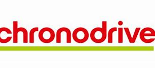
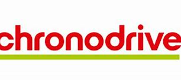

Profil
- A propos de moi
Je m'apelle Devinck Thomas, j'ai actuellement 19 ans et je suis étuidant au sein du lycée gaston berger a Lille. Je suis en première année du BTS SIO (services informatiques aux organisations), je souhaite poursuivre en spécialité SLAM "Solutions logicielles et applications métiers". Mon intêret envers l'informatique s'est développé lors de mon stage de 3e que j'ai effectué au sein de l'entreprise AFG (maintenant Neo-Soft) puis c'est confirmé lors de mes années de secondes et terminales au sein du Lycée Jean Perrin puis en première année de Licence SESI (Sciences exactes et sciences de l'ingenieurs)
Téléchargement de mon cv :
Voici mon CV
- Projet professionnel
J'ai eu l'opportunité d'effectuer mon stage d'observation de 3e dans une entreprise informatique se nommant AFG (maintenant devenu Néo-Soft) qui m'as permit de découvrir les différents métiers et domaines de l'informatique, c'est une experience qui m'as conforter dans le choix de l'informatique. De plus aujourd'hui j'acquérit une experience professionnelles en étant préparateur de commandes drive en grande distribution

Voici mes différents réseaux :
- Linkedin : https://fr.linkedin.com/in/thomas-devinck-110ba124b
- Viadeo : https://viadeo.journaldunet.com/p/thomas-devinck-7977939?
- Indeed : allez directement sur indeed
J'ai eu l'opportunité d'effectuer mon stage d'observation de 3e dans une entreprise informatique se nommant AFG (maintenant devenu Néo-Soft) qui m'as permit de découvrir les différents métiers et domaines de l'informatique, c'est une experience qui m'as conforter dans le choix de l'informatique. De plus aujourd'hui j'acquérit une experience professionnelles en étant préparateur de commandes drive en grande distribution
Voici mes différents réseaux :
- Linkedin : https://fr.linkedin.com/in/thomas-devinck-110ba124b
- Viadeo : https://viadeo.journaldunet.com/p/thomas-devinck-7977939?
- Indeed : allez directement sur indeed